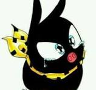
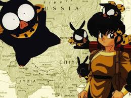

P CHAN
P-chan es la mascota de Akane ("P" por "Pig", "cerdo" en inglés y el chan es un sufijo afectivo, en España se le llamó C-Chan, por la C de "Cerdito"), que no sabe que es Ryōga, otro que quedó maldito por los estanques de Jusenkyo conocido como "El Estanque del Cerdo Negro Ahogado", que lo convierte en un cerdo negro al más leve contacto del agua fría..
Rivalidad
Suele guardarle rencor a Ranma porque él fue el culpable de que cayera accidentalmente a dichas aguas malditas, llegando ser su mayor rival, a pesar de que en los malos momentos ambos son capaces de apoyarse mutuamente e incluso han afirmado en más de una ocasión ser amigos (aunque casi siempre solo sea una excusa para una encerrona entre ambos). Además Ranma ha jurado no decirle a nadie acerca de su transformación de cerdo, especialmente a Akane, lo que no impide que esté siempre insinuando de forma poco sutil que Ryōga es P-chan, especialmente cuando Akane le demuestra su afecto.
Datos sobre P CHAN
p-chan puede dormir en la cama con Akane, lo que enfurece a Ranma. Carece completamente de sentido de la orientación, por lo que se pierde a menudo. Siempre aparece vestido con ropa china, con camisa amarilla, pantalón verde, un pañuelo amarillo en su cabeza (que pasa a su cuello cuando se convierte en cerdo), zapatos chinos y un paraguas. Cuando está convertido en cerdo, algunas veces logra dormir con Akane en la cama de ésta. Es el único al que realmente le gusta la comida de Akane y también el único al que la comida de ésta no le hace daño.
El final
Tiene buena caligrafía, es una de las pocas personas que pueden usar la técnica del rugido del león con facilidad gracias a su constante depresión. Al inicio de la serie Ryōga no sentía ningún afecto por Akane, pero luego de que ésta lo besara siendo un cerdo (como muestra de cariño) se enamoró de ella perdidamente. Cuando está convertido en P-Chan se lo han intentado comer varias veces.